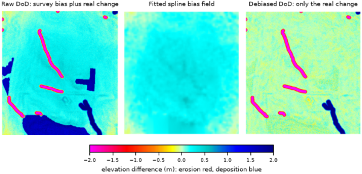

r.dem.bias removes terrain-correlated systematic bias that remains in a DEM of Difference (DoD) after rigid co-registration. Alignment tools such as r.dem.coregister, r.dem.nk, and r.dem.icp remove translation and rotation, but a residual elevation difference often still varies with terrain (for example a positive canopy bump in forest, or error that scales with slope, roughness, or point density). This tool models that residual and subtracts it.
Three methods are provided through the method option.
Fits a multivariable linear model of the DoD on z-scored terrain predictors over stable terrain, then subtracts the fitted surface from the full DoD.
b0 + sum(b_i * z_i) is subtracted from the DoD.sqrt(x' Cov x) on the
transformed predictors. It deliberately excludes the residual variance
s2 so downstream quadratures (r.dem.lod
sigma_extra, r.dem.errprop sigma) do not double
count. The covariance is iid OLS and understates coefficient uncertainty
under spatially correlated residuals.d = sqrt(n*h - 1) in fit-sd units, the distance-from-control
map: coefficient uncertainty cannot express model-form error under
extrapolation.Predictor rasters are typically produced by r.dem.stats (slope, roughness, landform diversity, local sigma) together with a reference-DEM uncertainty surface.
Interpolates the stable-cell residuals into a smooth spatial bias field with v.surf.rst and subtracts it; no terrain predictors, no collinearity pathologies. The field is fit from spline_npoints randomly sampled stable cells (deterministic seed) at the coarse spline_res resolution with spline_tension and spline_smooth, then resampled bilinearly to the analysis grid. Most trustworthy near stable cells; validate with a holdout before trusting extrapolation.
Estimates a local trimmed-median bias field over a masked subset of cells (classically a forest canopy bump) and subtracts it.
A local trimmed median cannot separate a canopy bump from real elevation change, so any deposition or scour inside mask is removed along with the bias. Keep known and suspected change areas out of the mask, using the footprint from a coarse r.dem.screen pass where one is available.
The optional bias_field output stores the estimated correction surface that was subtracted, which is useful for inspection and reporting.
For method=regression the corrected DoD is NULL wherever any
predictor is NULL (the fitted surface is undefined there); output_se
follows the same predictor-driven NULL pattern, and is defined even where the
input DoD is NULL.
The mask used by method=forest is applied through a temporary
mask context and is removed automatically; the user's existing mask and
computational region are left untouched. Intermediate rasters are removed on
exit.
The commands below use the example scene built in the r.dem toolset manual, which is derived from the North Carolina sample dataset. Build it there first.
The scene carries three bias components, and each method removes a different one. Chain them: no single method removes all three.
Start with the long-wavelength dome, fitted from the stable cells and interpolated across the map:
g.region raster=elev_lid792_1m
r.dem.bias dod=dod_raw output=dod_spline method=spline \
stable_mask=stable_terrain bias_field=bias_spline
Then the canopy bump, estimated as a local trimmed median under the forest mask:
r.dem.bias dod=dod_spline output=dod_debiased method=forest \
mask=forest window=21
The residual on stable terrain falls from 0.17 m to under 0.01 m, and the residual over forest falls from 1.68 m to under 0.01 m.
The regression path models the bias against terrain predictors instead, keeping the coefficient uncertainty for the uncertainty budget downstream:
r.dem.bias dod=dod_raw output=dod_regression method=regression \
predictors=roughness stable_mask=stable_terrain \
output_se=bias_se output_leverage=bias_leverage \
fit_json=bias_fit.json

Corey T. White, Center for Geospatial Analytics, NC State University
{kind=link}